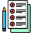

Personalize your experience
Settings
Choose where tracking is enabled and how session activity is measured.

Profile
Choose the profile for this installation.
Allowed websites
Activity is tracked only on sites in this list.
Use a full HTTPS URL. Add * to include paths, such as https://docs.google.com/*.
Session thresholds
Adjust how long inactivity and paste activity are interpreted.